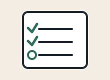

Choose a small habit
Pick one habit that is easy to repeat. The goal is not perfection. The goal is to return to the habit again tomorrow.

100 Days of Small Habits
Pick one habit that is easy to repeat. The goal is not perfection. The goal is to return to the habit again tomorrow.
